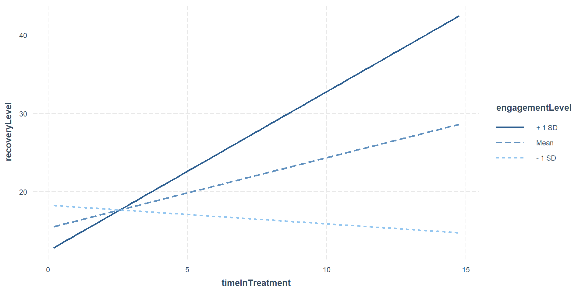
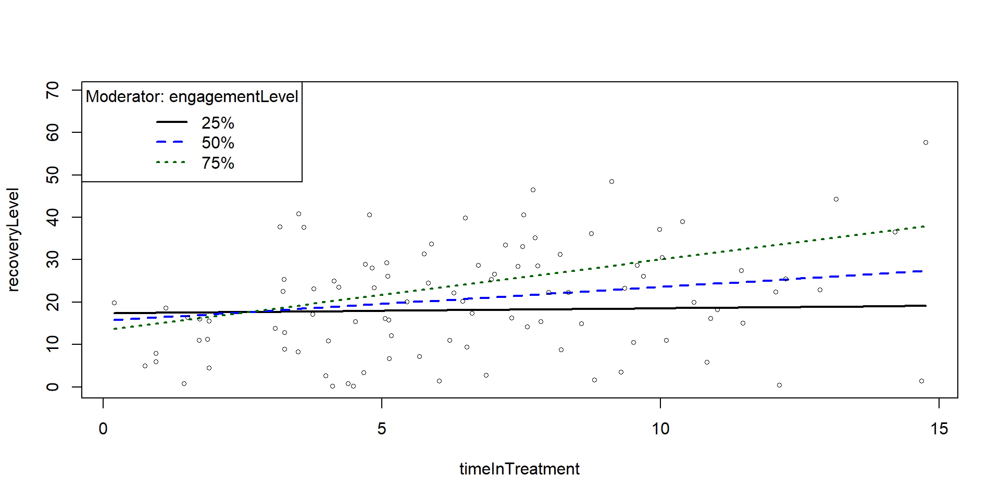
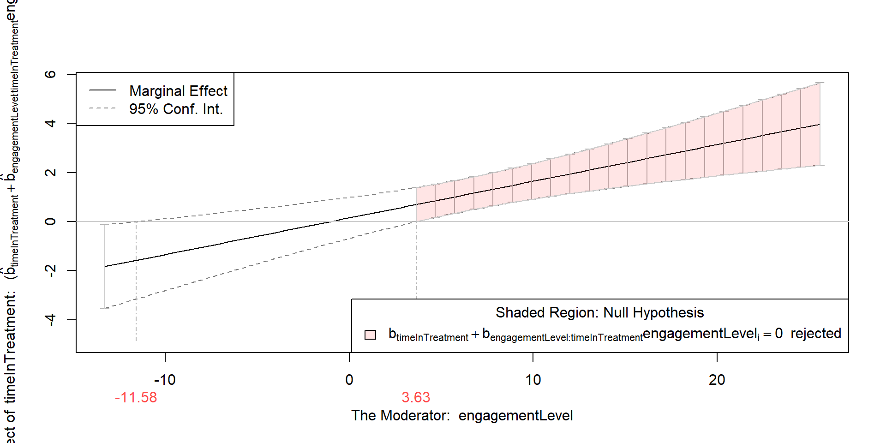
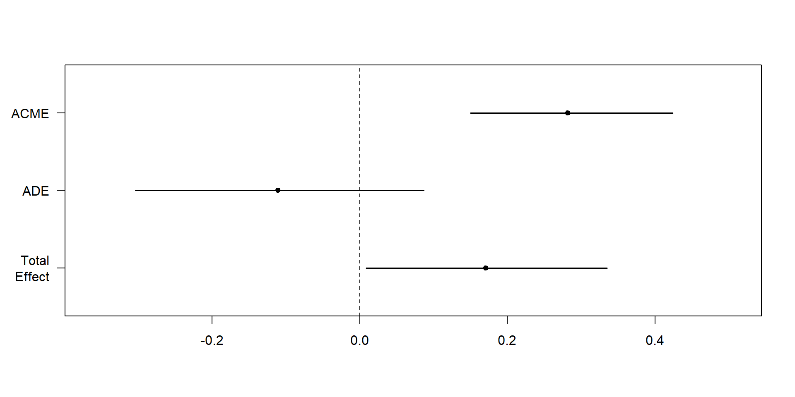

Moderation and Mediation in R
Advanced Psychological Research Methods
Questions?
Submit your attendance
Attendance code: 5910

http://bit.ly/APRM22
Moderation analysis
Overview
- What are mediation and moderation?
- Moderation analysis in more detail
- Grand Mean Centering
- Checking Assumptions
- Interpreting Moderation
- Bootstrapping Moderation
What are moderation and mediation?
What is moderation?
There is a direct relationship between X and Y but it is affected by a moderator (M)
In the above model, we theorise that the Treatment has a direct relationship with Recovery and the nature of that relationship can be affected by the level of Engagement from the clinician.
What is mediation?
Where the relationship between a predictor (X) and an outcome (Y) is mediated by another variable (M).
In the above model, we theorise that the relationship between Treatment and Recovery is indirect. That is, Recovery happens via Engagement from the clinician, not independently of it.
Why different models?
In this model, we are saying that to understand the relationship between Treatment and Recovery, we need to include Clinician Engagement, because that is what has the direct relationship with Recovery.
Why different models?
In this model, we are saying that the variance in recovery can be explained by treatment, but the level of clinician engagement affects the strength or direction of the relationship (i.e. can weaken/strengthen it, change its direction).
Moderation
What packages do we need?
- gvlma (for checking assumptions)
- interactions (for generating interaction plot)
- Rockchalk (for testing simple slopes)
- car (includes a Boot() function to bootstrap regression models )
What is moderation?
- The relationship between a predictor (X) and outcome (Y) is affected by another variable (M)
- This is referred to as an interaction (similar to interaction in standard regression)
- A moderator can effect the direction and/or strength of a relationship between X and Y
Here we might find that the relationship between Time in Treatment and General Wellbeing is strong for those who have a strong engagement with their Treatment psychologist and weak for those who do not have good engagement with their Treatment psychologist.
What is moderation? #2
Very similar to multiple regression
lm(Y ~ X + M + X*M)
Moderation analysis includes X, M and the interaction between X and M
If we find a moderation effect it becomes the focus of our analysis (the independent role of X and M becomes less important)
What is moderation? #3
In the plot above:
- The blue line is the “standard” regression line
- The black line is when the moderator is “low” (-1sd)
- The dotted line is when the moderator is “high” (+1sd)
Moderation: step-by-step
Step 1: Grand Mean Centering
Regression coefficients (b values) are based on predicting Y when X = 0
Not all measures actually have a zero value
To make results easier to interpret, we can centre our data around the grand mean of the data (making the mean 0)
- The mean of the full sample is subtracted from the value
This is similar to z-score (i.e. a standardised score)
To do this in R, we can use the scale() function:
Xc <- scale(X, center=TRUE, scale=FALSE) #Centering X;
Mc <- scale(M, center=TRUE, scale=FALSE) #Centering M;We then use the centred data in our analysis
Step 1: Grand Mean Centering #2
We can see that the difference between the original data is the mean of the data.
#Centering Data
Moddata$timeInTreatment_centred <- c(scale(timeInTreatment, center=TRUE, scale=FALSE))
#Centering IV;
Moddata$engagementLevel_centred <- c(scale(engagementLevel, center=TRUE, scale=FALSE)) #Centering moderator;
#Moderation "By Hand" with centred data
library(gvlma)
fitMod <- lm(recoveryLevel ~ timeInTreatment_centred *engagementLevel_centred , data = Moddata) #Model interacts IV & moderator
library(interactions)
ip <- interact_plot(fitMod, pred = timeInTreatment_centred, modx = engagementLevel_centred)
ipDo I need to mean centre my data?
It is worth noting:
- It does not change the results of your interaction (coefficient, standard error or significance tests).
- It will change the results of the direct effects (the individual predictors in your model).
- It is a step that tries to ensure that the coefficients of the predictor and moderator are meaningful in relation to each other.
- In some cases, it might not be necessary to mean centre at all. However, there is no harm in doing so, and it could potentially be helpful.
Hayes (2013) discusses mean centering, pp. 282-290.
McClelland, G. H., Irwin, J. R., Disatnik, D., & Sivan, L. (2017). Multicollinearity is a red herring in the search for moderator variables: A guide to interpreting moderated multiple regression models and a critique of Iacobucci, Schneider, Popovich, and Bakamitsos (2016). Behavior research methods, 49(1), 394-402.
Step 2: Check assumptions
We can use the gvlma function to check regression assumptions
Call:
lm(formula = recoveryLevel ~ timeInTreatment_centred * engagementLevel_centred,
data = Moddata)
Coefficients:
(Intercept)
21.1851
timeInTreatment_centred
0.8971
engagementLevel_centred
0.5842
timeInTreatment_centred:engagementLevel_centred
0.1495
ASSESSMENT OF THE LINEAR MODEL ASSUMPTIONS
USING THE GLOBAL TEST ON 4 DEGREES-OF-FREEDOM:
Level of Significance = 0.05
Call:
gvlma(x = fitMod)
Value p-value Decision
Global Stat 9.6949 0.04589 Assumptions NOT satisfied!
Skewness 7.7571 0.00535 Assumptions NOT satisfied!
Kurtosis 1.2182 0.26972 Assumptions acceptable.
Link Function 0.5287 0.46716 Assumptions acceptable.
Heteroscedasticity 0.1910 0.66207 Assumptions acceptable.The “global stat” is an attempt to check multiple assumptions of linear model (Pena & Slate, 2006).
Since one of the underlying assumptions is violated, the overall stat is also not acceptable.
The data looks skewed, we should transform it or perhaps use bootstrapping
Step 3: Moderation Analysis
Call:
lm(formula = recoveryLevel ~ timeInTreatment_centred * engagementLevel_centred,
data = Moddata)
Residuals:
Min 1Q Median 3Q Max
-18.121 -8.938 -0.670 5.840 37.396
Coefficients:
Estimate Std. Error t value
(Intercept) 21.18508 1.14115 18.565
timeInTreatment_centred 0.89707 0.33927 2.644
engagementLevel_centred 0.58416 0.15117 3.864
timeInTreatment_centred:engagementLevel_centred 0.14948 0.04022 3.716
Pr(>|t|)
(Intercept) < 2e-16 ***
timeInTreatment_centred 0.009569 **
engagementLevel_centred 0.000203 ***
timeInTreatment_centred:engagementLevel_centred 0.000340 ***
---
Signif. codes: 0 '***' 0.001 '**' 0.01 '*' 0.05 '.' 0.1 ' ' 1
Residual standard error: 11.33 on 96 degrees of freedom
Multiple R-squared: 0.2737, Adjusted R-squared: 0.251
F-statistic: 12.06 on 3 and 96 DF, p-value: 9.12e-07The results above show that there is a moderated effect
Step 3: Moderation analysis #2
We use an approach called simple slopes to visualise the moderation effect
interact_plot(fitMod, pred = timeInTreatment_centred, modx = engagementLevel_centred)Step 3: Moderation analysis #3
The rockchalk package includes useful functions for visualising simple slopes
Call:
lm(formula = recoveryLevel ~ timeInTreatment * engagementLevel,
data = Moddata)
Residuals:
Min 1Q Median 3Q Max
-18.121 -8.938 -0.670 5.840 37.396
Coefficients:
Estimate Std. Error t value Pr(>|t|)
(Intercept) 17.28006 3.17944 5.435 4.15e-07 ***
timeInTreatment 0.15510 0.42033 0.369 0.71296
engagementLevel -0.38484 0.29916 -1.286 0.20140
timeInTreatment:engagementLevel 0.14948 0.04022 3.716 0.00034 ***
---
Signif. codes: 0 '***' 0.001 '**' 0.01 '*' 0.05 '.' 0.1 ' ' 1
Residual standard error: 11.33 on 96 degrees of freedom
Multiple R-squared: 0.2737, Adjusted R-squared: 0.251
F-statistic: 12.06 on 3 and 96 DF, p-value: 9.12e-07
Values of engagementLevel OUTSIDE this interval:
lo hi
-11.580166 3.634439
cause the slope of (b1 + b2*engagementLevel)timeInTreatment to be statistically significant
What is bootstrapping?
“Bootstrapping is a nonparametric approach to effect-size estimation and hypothesis testing that makes no assumptions about the shape of the distributions of the variables or the sampling distribution of the statistic” (Preacher & Hayes, 2004, p. 722)
Bootstrapping takes a large number of samples from our data and runs the analysis on each of these samples
The sampling is done randomly with replacement, and each sample in the bootstrap is the same size as our dataset
Using this method, we can create estimates with that fall within a narrower confidence interval (since we have now run the analysis on 100’s of samples)
Bootstrapping overcomes concerns about the distribution of our original dataset
Step 4: Bootstrapping
The car package includes a function to bootstrap regression
2.5 % 97.5 %
(Intercept) 10.96891826 23.5912086
timeInTreatment -0.67926290 0.9894532
engagementLevel -0.97866229 0.2089882
timeInTreatment:engagementLevel 0.06963667 0.2293205Bootstrap bca confidence intervals
2.5 % 97.5 %
(Intercept) 11.57230420 23.7222700
timeInTreatment -0.61780918 1.0397199
engagementLevel -0.90786799 0.2558502
timeInTreatment:engagementLevel 0.05806412 0.2146814
Number of bootstrap replications R = 999
original bootBias bootSE bootMed
(Intercept) 17.28006 -0.13667103 3.165301 17.05431
timeInTreatment 0.15510 0.01637117 0.399550 0.15929
engagementLevel -0.38484 0.00716631 0.294061 -0.38218
timeInTreatment:engagementLevel 0.14948 -0.00052838 0.038516 0.14974How do we use this information?
If this bias is large, there could be bias in the estimates from your sample data
However, you should not correct based on one bias estimate, as it could be an over-correction
“It provides information to you that your estimate contains bias (or not) and this information can influence your decision making based on the estimate” (Zivot, 2021, Chapter 8.6).
Number of bootstrap replications R = 999
original bootBias bootSE bootMed
(Intercept) 17.28006 -0.13667103 3.165301 17.05431
timeInTreatment 0.15510 0.01637117 0.399550 0.15929
engagementLevel -0.38484 0.00716631 0.294061 -0.38218
timeInTreatment:engagementLevel 0.14948 -0.00052838 0.038516 0.14974Mediation analysis
What is a mediation design?
Whether a mediation analysis is appropriate is determined as much by the design as by statistical criteria.
We must consider whether it makes sense to predict this relationship between variables
What is mediation analysis?
- Based on regression
A summary of the logic of mediation:
- The direct relationship between X and Y should be significant
- The relationship between X and M should be significant
- The relationship between M and Y (controlling for X) should be significant
- When controlling for M, the strength of the relationship between X and Y decreases and is not significant
What is mediation analysis /#2?
- The direct relationship between X and Y should be significant
- The relationship between X and M should be significant
- The relationship between M and Y (controlling for X) should be significant
- When controlling for M, the strength of the relationship between X and Y decreases and is not significant
Baron & Kenny (1986) originally used a 4-step regression model to test each of these relationships.
What packages do we need?
library(mediation) #Mediation package
library(multilevel) #Sobel Test
library(bda) #Another Sobel Test option
library(gvlma) #Testing Model Assumptions
library(stargazer) #Handy regression tablesMediation analysis (the Baron and Kenny Approach)
Conducting mediation analysis (the Baron and Kenny Approach)
- Baron & Kenny (1986) originally used a 4-step regression model to test each of these relationships.
- The sobel test is then used to test the significance of mediation
Step 1: Total Effect
Call:
lm(formula = Y ~ X, data = Meddata)
Residuals:
Min 1Q Median 3Q Max
-10.917 -3.738 -0.259 2.910 12.540
Coefficients:
Estimate Std. Error t value Pr(>|t|)
(Intercept) 19.88368 14.26371 1.394 0.1665
X 0.16899 0.08116 2.082 0.0399 *
---
Signif. codes: 0 '***' 0.001 '**' 0.01 '*' 0.05 '.' 0.1 ' ' 1
Residual standard error: 5.16 on 98 degrees of freedom
Multiple R-squared: 0.04237, Adjusted R-squared: 0.0326
F-statistic: 4.336 on 1 and 98 DF, p-value: 0.03993Step 2:
Call:
lm(formula = M ~ X, data = Meddata)
Residuals:
Min 1Q Median 3Q Max
-9.5367 -3.4175 -0.4375 2.9032 16.4520
Coefficients:
Estimate Std. Error t value Pr(>|t|)
(Intercept) 6.04494 13.41692 0.451 0.653
X 0.66252 0.07634 8.678 8.87e-14 ***
---
Signif. codes: 0 '***' 0.001 '**' 0.01 '*' 0.05 '.' 0.1 ' ' 1
Residual standard error: 4.854 on 98 degrees of freedom
Multiple R-squared: 0.4346, Adjusted R-squared: 0.4288
F-statistic: 75.31 on 1 and 98 DF, p-value: 8.872e-14Step 3:
Call:
lm(formula = Y ~ M + X, data = Meddata)
Residuals:
Min 1Q Median 3Q Max
-9.3651 -3.3037 -0.6222 3.1068 10.3991
Coefficients:
Estimate Std. Error t value Pr(>|t|)
(Intercept) 17.32177 13.16216 1.316 0.191
M 0.42381 0.09899 4.281 4.37e-05 ***
X -0.11179 0.09949 -1.124 0.264
---
Signif. codes: 0 '***' 0.001 '**' 0.01 '*' 0.05 '.' 0.1 ' ' 1
Residual standard error: 4.756 on 97 degrees of freedom
Multiple R-squared: 0.1946, Adjusted R-squared: 0.1779
F-statistic: 11.72 on 2 and 97 DF, p-value: 2.771e-05Step 4:
Call:
lm(formula = X ~ Y + M, data = Meddata)
Residuals:
Min 1Q Median 3Q Max
-14.438 -2.573 -0.030 3.010 11.779
Coefficients:
Estimate Std. Error t value Pr(>|t|)
(Intercept) 96.11234 9.27663 10.361 < 2e-16 ***
Y -0.11493 0.10229 -1.124 0.264
M 0.69619 0.08356 8.332 5.27e-13 ***
---
Signif. codes: 0 '***' 0.001 '**' 0.01 '*' 0.05 '.' 0.1 ' ' 1
Residual standard error: 4.823 on 97 degrees of freedom
Multiple R-squared: 0.4418, Adjusted R-squared: 0.4303
F-statistic: 38.39 on 2 and 97 DF, p-value: 5.233e-13Viewing output
Summary Table
stargazer(fit, fita, fitb, fitc, type = "text", title = "Baron and Kenny Method")
Interpreting Baron and Kenny approach
A reminder of the logic of mediation:
- The direct relationship between X and Y should be significant
- The relationship between X and M should be significant
- The relationship between M and Y (controlling for X) should be significant
- When controlling for M, the strength of the relationship between X and Y decreases and is not significant
Running the Sobel test
- The Sobel test checks the significance of indirect effects
$`Mod1: Y~X`
Estimate Std. Error t value Pr(>|t|)
(Intercept) 19.8836805 14.2637142 1.394004 0.16646905
pred 0.1689931 0.0811601 2.082220 0.03992761
$`Mod2: Y~X+M`
Estimate Std. Error t value Pr(>|t|)
(Intercept) 17.3217682 13.16215851 1.316028 1.912663e-01
pred -0.1117904 0.09949262 -1.123605 2.639537e-01
med 0.4238113 0.09899469 4.281152 4.371472e-05
$`Mod3: M~X`
Estimate Std. Error t value Pr(>|t|)
(Intercept) 6.0449365 13.41692114 0.4505457 6.533122e-01
pred 0.6625203 0.07634187 8.6783345 8.871741e-14
$Indirect.Effect
[1] 0.2807836
$SE
[1] 0.07313234
$z.value
[1] 3.83939
$N
[1] 100Mediation analysis (the Mediation package)
Preacher & Hayes (2004) mediation approach
- Mediation package in R uses the Preacher & Hayes (2004) bootstrapping approach
- They argue that few people test the signficance of the indirect effect
“Baron and Kenny simply state that perfect mediation has occurred if c’ becomes nonsignificant after controlling for M, so researchers have focused on that requirement.” (Preacer & Hayes, 2004, p. 719)
- Sobel test has low power (requires larger sample sizes)
- Sobel test assumes normality (often violated)
Mediation example
Is the relationship between No of hours awake and wakefulness mediated by caffiene consumption?
This example is from Demos & Salas (2019). A Language, not a Letter: Learning Statistics in R (Chapter 14)
Step 1: Run the models
Step 2: Check assumptions
Call:
lm(formula = M ~ X, data = Meddata)
Coefficients:
(Intercept) X
6.0449 0.6625
ASSESSMENT OF THE LINEAR MODEL ASSUMPTIONS
USING THE GLOBAL TEST ON 4 DEGREES-OF-FREEDOM:
Level of Significance = 0.05
Call:
gvlma(x = fitM)
Value p-value Decision
Global Stat 8.833 0.06542 Assumptions acceptable.
Skewness 6.314 0.01198 Assumptions NOT satisfied!
Kurtosis 1.219 0.26949 Assumptions acceptable.
Link Function 1.076 0.29959 Assumptions acceptable.
Heteroscedasticity 0.223 0.63674 Assumptions acceptable.Step 2: Check assumptions
Call:
lm(formula = Y ~ X + M, data = Meddata)
Coefficients:
(Intercept) X M
17.3218 -0.1118 0.4238
ASSESSMENT OF THE LINEAR MODEL ASSUMPTIONS
USING THE GLOBAL TEST ON 4 DEGREES-OF-FREEDOM:
Level of Significance = 0.05
Call:
gvlma(x = fitY)
Value p-value Decision
Global Stat 3.41844 0.4904 Assumptions acceptable.
Skewness 1.85648 0.1730 Assumptions acceptable.
Kurtosis 0.77788 0.3778 Assumptions acceptable.
Link Function 0.71512 0.3977 Assumptions acceptable.
Heteroscedasticity 0.06896 0.7929 Assumptions acceptable.Step 3.1: Run the mediation analysis on the models
The mediate function gives us:
- Average Causal Mediation Effects (ACME) - Average Direct Effects (ADE) - combined indirect and direct effects (Total Effect) - the ratio of these estimates (Prop. Mediated).
The ACME here is the indirect effect of M (total effect - direct effect) and thus this value tells us if our mediation effect is significant.
Causal Mediation Analysis
Quasi-Bayesian Confidence Intervals
Estimate 95% CI Lower 95% CI Upper p-value
ACME 0.28159 0.14991 0.42 <2e-16 ***
ADE -0.11100 -0.30382 0.09 0.260
Total Effect 0.17059 0.00862 0.33 0.038 *
Prop. Mediated 1.62837 0.55308 9.84 0.038 *
---
Signif. codes: 0 '***' 0.001 '**' 0.01 '*' 0.05 '.' 0.1 ' ' 1
Sample Size Used: 100
Simulations: 1000 Step 3.2: Plot the mediation analysis of the models
The plot below reiterates what was on the previous slide:
- The confidence intervals of Total Effect and ACME are significant
- The confidence interval of ADE is not significant
Translation: - Total effect is signficant: there is a relationship between X and Y (direct and indirect) - ADE is not significant: the relationship between X and Y is not direct - ACME is significant: the relationship between X and Y is mediated by M
Step 4: Bootstrap the mediation model
The plot below changes our interpretation slightly:
- The confidence interval ACME is significant
- The confidence interval of Total Effect and ADE are not significant
Translation: - Total effect is not signficant: the relationship between X and Y is not significant when we combine direct and indirect effects - ADE is not significant: the relationship between X and Y is not direct - ACME is significant: the relationship between X and Y is mediated by M
Causal Mediation Analysis
Nonparametric Bootstrap Confidence Intervals with the Percentile Method
Estimate 95% CI Lower 95% CI Upper p-value
ACME 0.2808 0.1409 0.42 <2e-16 ***
ADE -0.1118 -0.3080 0.12 0.31
Total Effect 0.1690 -0.0123 0.34 0.07 .
Prop. Mediated 1.6615 -3.7235 11.33 0.07 .
---
Signif. codes: 0 '***' 0.001 '**' 0.01 '*' 0.05 '.' 0.1 ' ' 1
Sample Size Used: 100
Simulations: 999 Summary
- What are mediation and moderation?
- Mediation analysis example
- Packages needed
- Baron and Kenny approach in R
- Mediation package approach in R
References
Demos & Salas (2019). A Language, not a Letter: Learning Statistics in R (Chapter 14). https://ademos.people.uic.edu/ Accessed Jan 2020.
Pardo, A., & Román, M. (2013). Reflections on the Baron and Kenny model of statistical mediation. Anales de psicologia, 29(2), 614-623.
Pena, E. A., & Slate, E. H. (2006). Global validation of linear model assumptions. Journal of the American Statistical Association, 101(473), 341-354.
Preacher, K. J., & Hayes, A. F. (2004). SPSS and SAS procedures for estimating indirect effects in simple mediation models. Behavior research methods, instruments, & computers, 36(4), 717-731.
Zivot, E. (2021). Introduction to Computational Finance and Financial Econometrics with R. Retrieved 11 November 2022, from https://bookdown.org/compfinezbook/introcompfinr/
Questions?
Submit your attendance
Attendance code: 5910